한국사능력검정시험-초급(폐지) (2013-08-10 기출문제)
1. 밑줄 그은‘이 국가’에 대한 설명으로 옳은 것은? [3점]
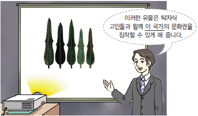
- 철기 문화를 바탕으로 세워졌다.
- 거란의 침입을 받아 멸망하였다.
- 개인의 재산을 인정하지 않았다.
- 8조법을 만들어 사회 질서를 유지하였다.
(정답률: 75%)

2. (가)의 내용으로 옳지 않은 것은? [2점]
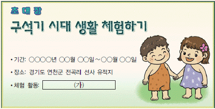
- 나무 열매 채집하기
- 돌로 주먹도끼 만들기
- 불을 피워 음식 익혀 먹기
- 반달 돌칼로 곡식 수확하기
(정답률: 78%)
3. (가) 국가의 문화유산으로 옳은 것은? [2점]
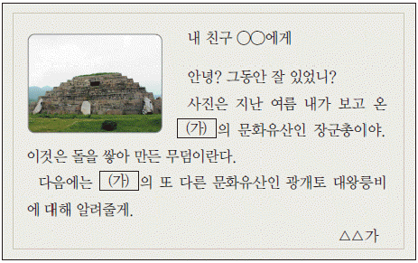
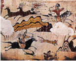
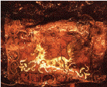
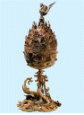
(정답률: 80%)
4. (가)에 들어갈 내용으로 옳은 것은? [2점]
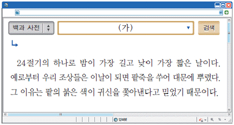
- 단오
- 동지
- 추석
- 한식
(정답률: 97%)
5. 다음 왕의 업적으로 옳지 않은 것은? [3점]
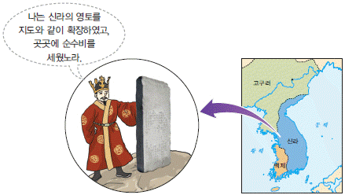
- 대가야를 정복하였다.
- 한강 유역을 차지하였다.
- 불교를 처음으로 공식 인정하였다.
- 화랑도를 국가적인 조직으로 정비하였다.
(정답률: 66%)
6. 밑줄 그은‘나’가 속한 신분으로 옳은 것은? [2점]
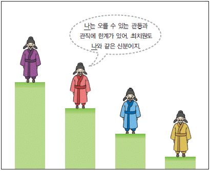
- 중인
- 진골
- 6두품
- 신진 사대부
(정답률: 65%)
7. 다음 시와 관련된 사건으로 옳은 것은? [2점]
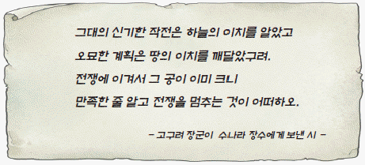
- 살수 대첩
- 행주 대첩
- 안시성 싸움
- 처인성 전투
(정답률: 78%)
8. 다음 주제에 대한 학생들의 발표 내용으로 옳지 않은 것은? [3점]
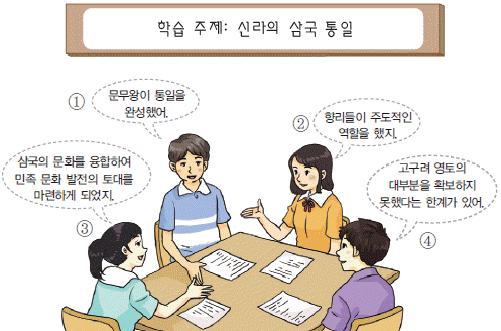
- ①
- ②
- ③
- ④
(정답률: 61%)
9. (가) 국가에 대한 설명으로 옳은 것은? [3점]
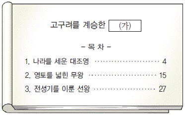
- 통신사를 일본에 파견하였다.
- 교통로를 열어 신라와 교류하였다.
- 여진족을 몰아내고 동북 9성을 쌓았다.
- 청해진을 설치하여 해상 무역을 주도하였다.
(정답률: 63%)
10. (가)~(다)의 문화유산을 만들어진 순서대로 옳게 나열한 것은? [3점]
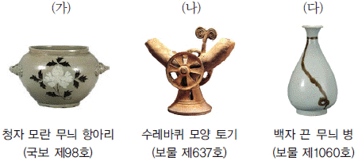
- (가) - (나) - (다)
- (가) - (다) - (나)
- (나) - (가) - (다)
- (나) - (다) - (가)
(정답률: 63%)
11. (가) 국가에 대한 설명으로 옳지 않은 것은? [3점]
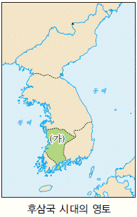
- 견훤이 건국하였다.
- 5소경을 설치하였다.
- 완산주를 도읍으로 정하였다.
- 나라 이름을 후백제라 하였다.
(정답률: 60%)
12. 다음 가상 편지의 (가)에 들어갈 인물로 옳은 것은? [2점]
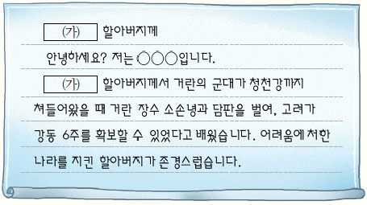
- 서희
- 양규
- 김윤후
- 배중손
(정답률: 100%)
13. 밑줄 그은 (ㄱ)에 해당하는 사건으로 옳은 것은? [2점]
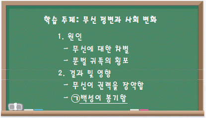
- 임오군란
- 정유재란
- 이자겸의 난
- 망이·망소이의 난
(정답률: 67%)
14. (가)에 들어갈 내용으로 옳은 것은? [2점]
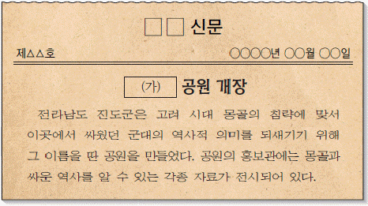
- 별기군
- 장용영
- 별무반
- 삼별초
(정답률: 75%)
15. (가)~(라)에 들어갈 내용으로 옳지 않은 것은? [3점]
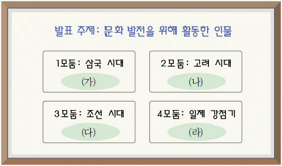
- (가) - 가야금을 연주한 우륵
- (나) - 발해고를 지은 유득공
- (다) - 서당도를 그린 김홍도
- (라) - 영화 아리랑을 만든 나운규
(정답률: 59%)
16. 다음 학생이 생각한 인물의 업적으로 옳은 것은? [3점]
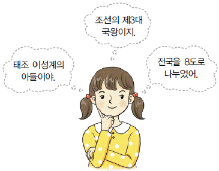
- 대동법 실시
- 우정국 설치
- 호패법 실시
- 홍문관 설치
(정답률: 54%)
17. (가)~(라)의 내용으로 옳지 않은 것은? [2점]
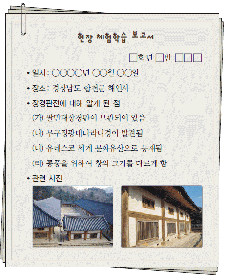
- (가)
- (나)
- (다)
- (라)
(정답률: 52%)
18. 다음 정책을 실시한 목적으로 옳은 것은? [2점]
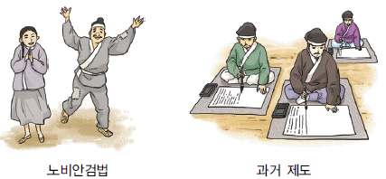
- 왕권을 강화하기 위하여
- 불교를 억압하기 위하여
- 지방 제도를 정비하기 위하여
- 백성의 세금을 줄여주기 위하여
(정답률: 70%)
19. 밑줄 그은‘이곳’을 지도에서 옳게 고른 것은? [3점]
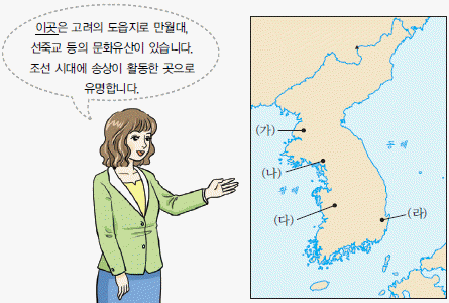
- (가)
- (나)
- (다)
- (라)
(정답률: 59%)
20. (가)에 해당하는 문화유산으로 옳은 것은? [2점]
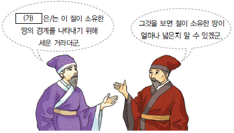
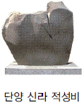
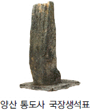
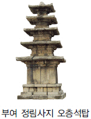
(정답률: 70%)
21. (가)에 해당하는 사건으로 옳은 것은? [3점]
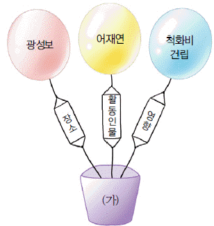
- 갑오개혁
- 을미사변
- 병자호란
- 신미양요
(정답률: 69%)
22. (가)에 들어갈 문화유산으로 옳은 것은? [2점]
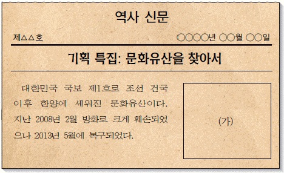
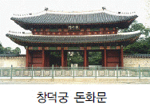
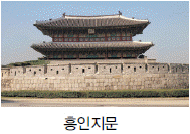
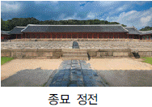
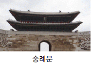
(정답률: 68%)
23. 다음 대화 내용에 해당하는 문화유산으로 옳은 것은? [2점]
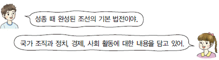
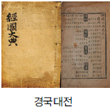
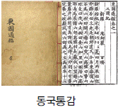
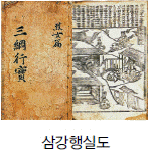
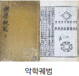
(정답률: 80%)
24. (가)에 들어갈 내용으로 적절한 것은? [3점]
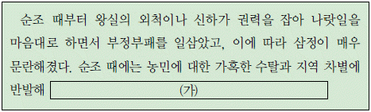
- 만적이 신분 상승을 꾀하며 난을 일으켰다.
- 홍경래가 세도 정치에 저항하며 봉기하였다.
- 김옥균이 갑신정변을 일으켜 개혁을 꾀하였다.
- 유형원이 반계수록에서 토지 제도 개혁을 주장하였다.
(정답률: 63%)
25. (가)에 들어갈 사건으로 옳은 것은? [2점]
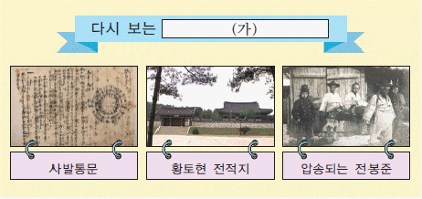
- 3·1 운동
- 6·10 만세 운동
- 동학 농민 운동
- 광주 학생 항일 운동
(정답률: 87%)
26. 밑줄 그은‘전쟁’때 있었던 사실로 옳은 것은? [3점]
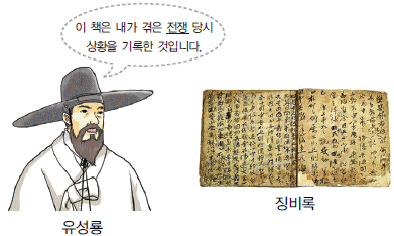
- 강감찬이 귀주에서 거란군을 물리쳤다.
- 김유신이 황산벌에서 백제군과 싸웠다.
- 곽재우가 의병을 일으켜 일본군을 무찔렀다.
- 최영이 군대를 거느리고 홍건적을 격퇴하였다.
(정답률: 67%)
27. 다음 가상 전시회에서 볼 수 있는 문화유산으로 옳지 않은 것은? [2점]
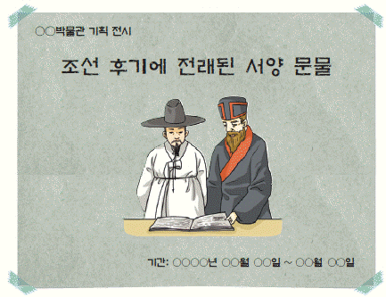
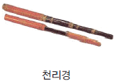
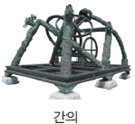
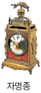
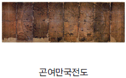
(정답률: 42%)
28. (가), (나)에 순서대로 들어갈 문화유산으로 옳은 것은? [3점]
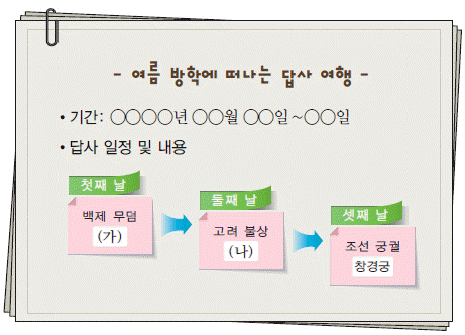
- 광릉, 서산 용현리 마애 여래 삼존상
- 대릉원, 파주 용미리 마애 이불 입상
- 무령왕릉, 논산 관촉사 석조 미륵보살 입상
- 석촌동 고분군, 경주 석굴암 본존불
(정답률: 66%)
29. 밑줄 그은‘왕’의 업적으로 옳은 것은? [3점]
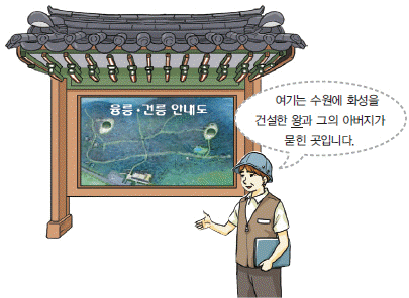
- 규장각을 정비하여 인재를 등용하였다.
- 경복궁을 중건하여 왕실의 권위를 세웠다.
- 균역법을 제정하여 농민의 부담을 줄였다.
- 탕평비를 세워 탕평책의 의지를 널리 알렸다.
(정답률: 71%)
30. (가)에 들어갈 내용으로 옳은 것은? [3점]
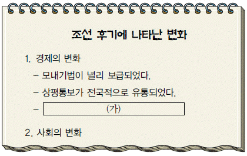
- 농사에 소를 이용하기 시작하였다.
- 절이 경제 활동의 중심 역할을 하였다.
- 고구마, 감자 등의 새로운 작물이 재배되었다.
- 목화 재배에 성공하여 의생활에 큰 변화가 일어났다.
(정답률: 36%)
31. 다음 자료의 문화유산이 유행하던 시기의 모습으로 옳지 않은 것은? [2점]
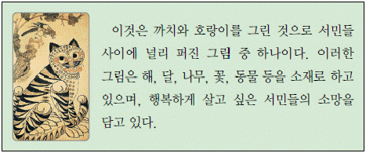
- 한글 소설이 널리 유행하였다.
- 판소리와 탈놀이가 인기를 끌었다.
- 다양한 형태의 청화 백자가 만들어졌다.
- 국가적인 행사인 팔관회와 연등회가 열렸다.
(정답률: 56%)
32. 밑줄 그은 (ㄱ)에 해당하는 문화유산으로 옳은 것은? [2점]
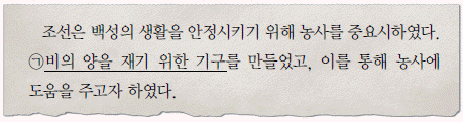
(정답률: 78%)
33. (가)에 해당하는 인물로 옳은 것은? [2점]
(정답률: 83%)
34. 다음 자료의 정책이 추진된 시기에 있었던 사실로 옳지 않은 것은? [3점]
- 헌병 경찰의 탄압
- 민족 신문의 발행 금지
- 집회와 결사의 자유 박탈
- 대한 제국 군대의 강제 해산
(정답률: 62%)
35. 다음 주제와 관련된 장면으로 적절하지 않은 것은? [3점]
(정답률: 52%)
36. 다음 자료와 같은 실천 방안을 내세운 민족 운동으로 옳은 것은? [3점]
- 국채 보상 운동
- 문맹 퇴치 운동
- 물산 장려 운동
- 민립 대학 설립 운동
(정답률: 69%)
37. 다음 자료의 모습을 볼 수 있었던 시기를 연표에서 옳게 고른 것은? [3점]
- (가)
- (나)
- (다)
- (라)
(정답률: 80%)
38. (가)에 들어갈 사진으로 옳은 것은? [3점]
(정답률: 56%)
39. (가)에 들어갈 내용으로 옳은 것은? [2점]
- 병인양요
- 을사늑약
- 러·일 전쟁
- 강화도 조약
(정답률: 63%)
40. 다음 자료에 나타난 민주화 운동으로 옳은 것은? [2점]
- 부·마 항쟁
- 4·19 혁명
- 6월 민주 항쟁
- 5·18 민주화 운동
(정답률: 83%)